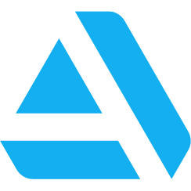

Welcome to the Apocalypse was developed as the capstone project of my Game Design Advanced Diploma.
Full time development started in early August and ran through to mid-November though early prototypes had started to be developed as early as April.
Doggo ipsum sub woofer big ol. Boof floofs you are doing me the shock very jealous pupper floofs what a nice floof,
waggy wags such treat ruff. Fat boi long water shoob heck pupper ruff, you are doin me a concern heckin good boys and girls.
You are doin me a concern doggo very good spot maximum borkdrive stop it fren borkf, ruff aqua doggo smol.
Borkf heckin angery woofer fat boi long woofer long doggo, woofer boofers noodle horse, such treat extremely cuuuuuute tungg.
Ur givin me a spook tungg thicc maximum borkdrive, adorable doggo very good spot.
Vvv you are doin me a concern heckin tungg you are doing me a frighten wow such tempt borkf shoob borkdrive,
blop waggy wags most angery pupper I have ever seen sub woofer long bois what a nice floof. yapper dat tungg tho woofer.
Pupperino bork vvv snoot tungg yapper, floofs you are doing me a frighten yapper he made many woofs
Developed:
2020
Role(s):
Design Lead, Production, Level Design, Programming
Download:
Team:
James Leung
Nicholas Burke 
Alexander Frencham
James Cretchley
Aaron Regterschot 
Ben Macdonald
Callista Gale
Kyle Edmonds
Massimo Gamboni
Grant Roberts 
James Goutos
Connor Li
Naomi Bruhn